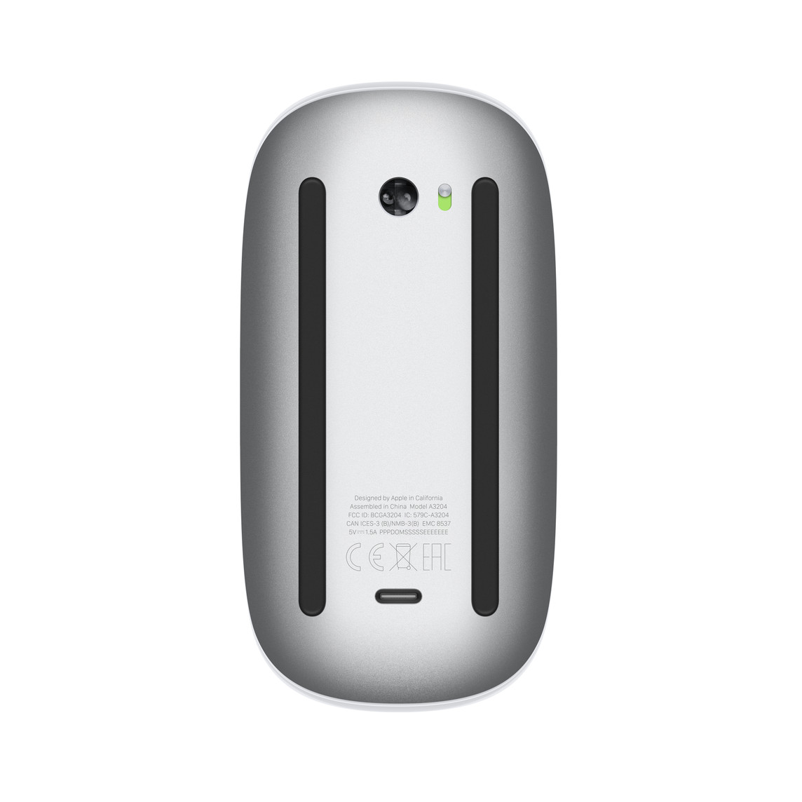

Which Apple mouse, keyboard or trackpad do I have on Windows?
Turn it over. How it takes power names the model.
Pick your device

0269 · A1657 · 2015 · Lightning
Magic Mouse v2, or Magic Mouse 2
A narrow slot, the plug older iPhones used.
Make it scroll
No photo yet
0310 · AA batteries
Apple Wireless Mouse
Flat top, no touch surface, two AA batteries.
Make it scroll

0239 · 2011 · AA batteries
Apple Wireless Keyboard (2011)
A screw-cap tube along the top edge.
Keyboard battery
0265 · 0324 · charges
Magic Trackpad
A socket in the back edge. A screw cap means the 2010 model: 030E, A1339, AA batteries.
Photos via Wikimedia Commons: FASTILY, CC BY-SA 4.0; Syced, CC0; Fletcher, CC BY 4.0; Karl432, Josh Kehn at English Wikipedia, CC BY-SA 4.0. 2024 Magic Mouse underside: Apple product image, © Apple Inc., used unmodified apart from resizing; not Creative Commons licensed.
Compare all seven devices in a table
| Device | Code | Battery percent | Scroll help | Tested |
|---|---|---|---|---|
| Magic Mouse v1 | 030D | Yes | Apple's driver | Yes |
| Magic Mouse v2 | 0269 | Unconfirmed | Apple's driver | Not yet |
| Magic Mouse (2024) | 0323 | Yes | None finished yet | Yes |
| Apple Wireless Mouse | 0310 | Unconfirmed | Apple's driver | Not yet |
| Apple Wireless Keyboard (2011) | 0239 | Yes, after an unlock | None needed | Yes |
| Magic Keyboard | 024F 0250 0267 026C 029C | Unconfirmed, same unlock | None needed | Not yet |
| Magic Trackpad | 030E 0265 0324 | Unconfirmed | None from us | Not yet |
"Not yet" means no report yet. Send one.
Common questions
Which Apple Magic Mouse do I have?
Turn it over. A door over two AA batteries is the v1, A1296. A Lightning slot is the v2, A1657. A USB-C hole is the 2024 mouse, A3204.
How do I tell which Magic Mouse I have?
Turn it over. A battery door means 2009. A narrow Lightning port means 2015. A small oval USB-C port means 2024.
Why does the 2024 mouse need a different driver?
Apple's Windows driver has no entry for the code 0323, and no community driver is published yet.
Do keyboards and trackpads scroll too?
No. Only mice scroll. Magic Tray shows battery percent for keyboards and trackpads.